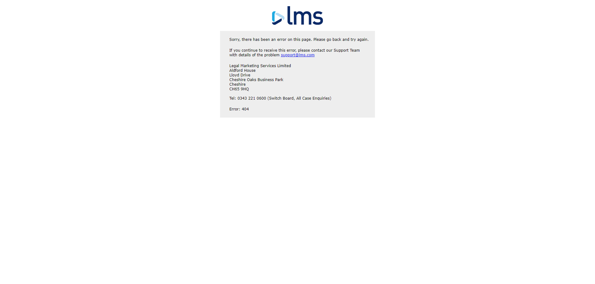
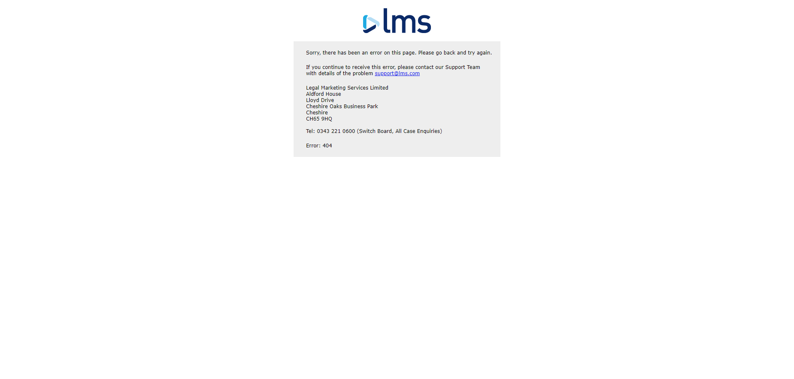
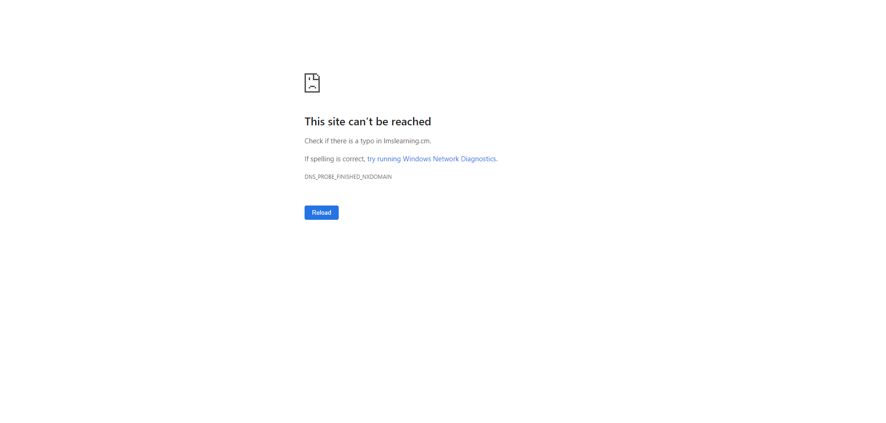
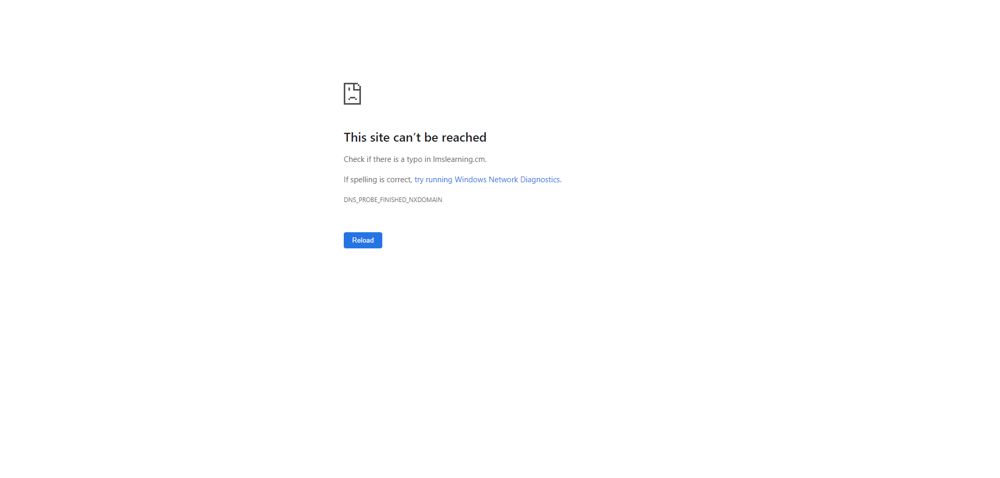

Started
Sep 18, 2023 07:59:41 PM
Ended
Sep 18, 2023 08:00:43 PM
Features Passed
0
Features Failed
5
Features
Scenarios
Steps
Timeline
Tags
| Name | Passed | Failed | Skipped | Others | Passed % |
|---|---|---|---|---|---|
| @TS-17 | 0 | 1 | 0 | 0 | 0% |
| @Student | 5 | 8 | 0 | 0 | 38.462% |
| @TS-16 | 0 | 1 | 0 | 0 | 0% |
| @TS-10 | 1 | 0 | 0 | 0 | 100% |
| @TS_4 | 0 | 1 | 0 | 0 | 0% |
| @TS-1 | 0 | 1 | 0 | 0 | 0% |
| @TS-9 | 1 | 0 | 0 | 0 | 100% |
| @TS-11 | 0 | 1 | 0 | 0 | 0% |
| @TS-15 | 0 | 1 | 0 | 0 | 0% |
| @TS-6 | 1 | 0 | 0 | 0 | 100% |
| @TS-8 | 1 | 0 | 0 | 0 | 100% |
| @TS-14 | 0 | 1 | 0 | 0 | 0% |
| @TS-2 | 1 | 0 | 0 | 0 | 100% |
| @TS-12 | 0 | 1 | 0 | 0 | 0% |
-
Add New class
7:59:44 PM / 00:00:00:977 Fail
Add New class
09.18.2023 7:59:44 PM 09.18.2023 7:59:45 PM 00:00:00:977 · #test-id=1FailValidate admin able to add new class with valid data in mandatory fieldsFailValidate admin able to add new class with valid data in mandatory fieldsGiven Admin is in class detail popup windowWhen Admin enters all mandatory field values with valid data from excel "Sheet1" and 1 and clicks save button ( Batch ID , No of Classes, Class Date, Staff Id)hooks.Hooks.afterstep(io.cucumber.java.Scenario)My screenshotThen Admin should see new class details is added in the data tableStep skipped -
Pagination in manage class
7:59:45 PM / 00:00:06:768 Fail
Pagination in manage class
09.18.2023 7:59:45 PM 09.18.2023 7:59:52 PM 00:00:06:768 · #test-id=11FailVerify right arrow is enable when sheet one is displayed in data tableGiven Admin is on dashboard page after LoginWhen Admin clicks Class button on the navigation barhooks.Hooks.afterstep(io.cucumber.java.Scenario)My screenshot Then Right arrow should be enabled in page one when entries are more than five availableStep skippedFailVerify left arrow is disabled when sheet one is displayed in data tableGiven Admin is on dashboard page after LoginWhen Admin clicks Class button on the navigation barhooks.Hooks.afterstep(io.cucumber.java.Scenario)My screenshot
Then Right arrow should be enabled in page one when entries are more than five availableStep skippedFailVerify left arrow is disabled when sheet one is displayed in data tableGiven Admin is on dashboard page after LoginWhen Admin clicks Class button on the navigation barhooks.Hooks.afterstep(io.cucumber.java.Scenario)My screenshot Then Left arrow should be disabled in page one when entries are more than five availableStep skippedFailVerify right arrow is enable when sheet two is displayed in data table when entries are more than tenGiven Admin is on dashboard page after LoginWhen Admin clicks Class button on the navigation barhooks.Hooks.afterstep(io.cucumber.java.Scenario)My screenshot
Then Left arrow should be disabled in page one when entries are more than five availableStep skippedFailVerify right arrow is enable when sheet two is displayed in data table when entries are more than tenGiven Admin is on dashboard page after LoginWhen Admin clicks Class button on the navigation barhooks.Hooks.afterstep(io.cucumber.java.Scenario)My screenshot Then Right arrow should be enabled in page two when entries are more than ten availableStep skippedFailVerify left arrow is enable when sheet two is displayed in data tableGiven Admin is on dashboard page after LoginWhen Admin clicks Class button on the navigation barhooks.Hooks.afterstep(io.cucumber.java.Scenario)My screenshot
Then Right arrow should be enabled in page two when entries are more than ten availableStep skippedFailVerify left arrow is enable when sheet two is displayed in data tableGiven Admin is on dashboard page after LoginWhen Admin clicks Class button on the navigation barhooks.Hooks.afterstep(io.cucumber.java.Scenario)My screenshot Then Left arrow should be enabled in page twoStep skippedFailVerify right arrow is disable when sheet two is displayed in data table when entries are less than tenGiven Admin is on dashboard page after LoginWhen Admin clicks Class button on the navigation barhooks.Hooks.afterstep(io.cucumber.java.Scenario)My screenshot
Then Left arrow should be enabled in page twoStep skippedFailVerify right arrow is disable when sheet two is displayed in data table when entries are less than tenGiven Admin is on dashboard page after LoginWhen Admin clicks Class button on the navigation barhooks.Hooks.afterstep(io.cucumber.java.Scenario)My screenshot Then Data table should display page one when entries availableStep skippedFailVerify pagination controls enabledGiven Admin is on dashboard page after LoginWhen Admin clicks Class button on the navigation barhooks.Hooks.afterstep(io.cucumber.java.Scenario)My screenshot
Then Data table should display page one when entries availableStep skippedFailVerify pagination controls enabledGiven Admin is on dashboard page after LoginWhen Admin clicks Class button on the navigation barhooks.Hooks.afterstep(io.cucumber.java.Scenario)My screenshot Then pagination controls should be enabled when entries are more than five in data tableStep skippedFailVerify pagination controls disabledGiven Admin is on dashboard page after LoginWhen Admin clicks Class button on the navigation barhooks.Hooks.afterstep(io.cucumber.java.Scenario)My screenshot
Then pagination controls should be enabled when entries are more than five in data tableStep skippedFailVerify pagination controls disabledGiven Admin is on dashboard page after LoginWhen Admin clicks Class button on the navigation barhooks.Hooks.afterstep(io.cucumber.java.Scenario)My screenshot Then pagination controls should be disabled when entries are less than five in data tableStep skipped
Then pagination controls should be disabled when entries are less than five in data tableStep skipped -
Class detail Popup window verification
7:59:52 PM / 00:00:08:574 Fail
Class detail Popup window verification
09.18.2023 7:59:52 PM 09.18.2023 8:00:00 PM 00:00:08:574 · #test-id=68FailVerify class details popup windowGiven Admin is on manage class pageWhen Admin click +Add New Class buttonhooks.Hooks.afterstep(io.cucumber.java.Scenario)My screenshot Then Admin should see a popup with heading class detailsStep skippedFailAdmin is on Manage Class PageGiven Admin is on manage class pageWhen Admin click +Add New Class buttonhooks.Hooks.afterstep(io.cucumber.java.Scenario)My screenshot
Then Admin should see a popup with heading class detailsStep skippedFailAdmin is on Manage Class PageGiven Admin is on manage class pageWhen Admin click +Add New Class buttonhooks.Hooks.afterstep(io.cucumber.java.Scenario)My screenshot Then Admin should see input fields Text Batch ID , No of Classes, Class Date, Class Topic, Staff Id, Class description, Comments, Notes, RecordingsStep skippedFailVerify drop down in Batch Id in class details popup windowGiven Admin is on manage class pageWhen Admin click +Add New Class buttonhooks.Hooks.afterstep(io.cucumber.java.Scenario)My screenshot
Then Admin should see input fields Text Batch ID , No of Classes, Class Date, Class Topic, Staff Id, Class description, Comments, Notes, RecordingsStep skippedFailVerify drop down in Batch Id in class details popup windowGiven Admin is on manage class pageWhen Admin click +Add New Class buttonhooks.Hooks.afterstep(io.cucumber.java.Scenario)My screenshot Then Admin should see dropdown option for Batch IDStep skippedFailVerify drop down in Staff Id in class details popup windowGiven Admin is on manage class pageWhen Admin click +Add New Class buttonhooks.Hooks.afterstep(io.cucumber.java.Scenario)My screenshotThen Admin should see dropdown option for Staff IdStep skippedFailVerify calendar icon in class date in class details popup windowGiven Admin is on manage class pageWhen Admin click +Add New Class buttonhooks.Hooks.afterstep(io.cucumber.java.Scenario)My screenshot
Then Admin should see dropdown option for Batch IDStep skippedFailVerify drop down in Staff Id in class details popup windowGiven Admin is on manage class pageWhen Admin click +Add New Class buttonhooks.Hooks.afterstep(io.cucumber.java.Scenario)My screenshotThen Admin should see dropdown option for Staff IdStep skippedFailVerify calendar icon in class date in class details popup windowGiven Admin is on manage class pageWhen Admin click +Add New Class buttonhooks.Hooks.afterstep(io.cucumber.java.Scenario)My screenshot Then Admin should see calendar icon for class dateStep skippedFailVerify save button is presentGiven Admin is on manage class pageWhen Admin click +Add New Class buttonhooks.Hooks.afterstep(io.cucumber.java.Scenario)My screenshot
Then Admin should see calendar icon for class dateStep skippedFailVerify save button is presentGiven Admin is on manage class pageWhen Admin click +Add New Class buttonhooks.Hooks.afterstep(io.cucumber.java.Scenario)My screenshot Then Admin should see save button in the class detail popup windowStep skippedFailVerify cancel button is presentGiven Admin is on manage class pageWhen Admin click +Add New Class buttonhooks.Hooks.afterstep(io.cucumber.java.Scenario)My screenshot
Then Admin should see save button in the class detail popup windowStep skippedFailVerify cancel button is presentGiven Admin is on manage class pageWhen Admin click +Add New Class buttonhooks.Hooks.afterstep(io.cucumber.java.Scenario)My screenshot Then Admin should see cancel button in the class detail popup windowStep skippedFailVerify close button in class details popup windowGiven Admin is on manage class pageWhen Admin click +Add New Class buttonhooks.Hooks.afterstep(io.cucumber.java.Scenario)My screenshot
Then Admin should see cancel button in the class detail popup windowStep skippedFailVerify close button in class details popup windowGiven Admin is on manage class pageWhen Admin click +Add New Class buttonhooks.Hooks.afterstep(io.cucumber.java.Scenario)My screenshot Then Admin should see close button on the class details popup windowStep skipped
Then Admin should see close button on the class details popup windowStep skipped -
Manage class page verification
8:00:00 PM / 00:00:14:293 Fail
Manage class page verification
09.18.2023 8:00:00 PM 09.18.2023 8:00:14 PM 00:00:14:293 · #test-id=133FailVerify landing in class pageFailVerify landing in class pageGiven admin is on Login page after clicking on Login button on home pagehooks.Hooks.afterstep(io.cucumber.java.Scenario)My screenshot When admin enters valid login and passwordStep skippedAnd clicks on login buttonStep skippedThen admin navigated to dashboard pageStep skippedGiven Admin is on dashboard page after LoginStep skippedWhen Admin clicks Class button on the navigation barStep skippedGiven Admin is on Manage Class PageStep skippedThen Admin should see URL with "Manage Class"Step skippedFailCapture the response time to navigate to manage class pageGiven admin is on Login page after clicking on Login button on home pagehooks.Hooks.afterstep(io.cucumber.java.Scenario)My screenshot
When admin enters valid login and passwordStep skippedAnd clicks on login buttonStep skippedThen admin navigated to dashboard pageStep skippedGiven Admin is on dashboard page after LoginStep skippedWhen Admin clicks Class button on the navigation barStep skippedGiven Admin is on Manage Class PageStep skippedThen Admin should see URL with "Manage Class"Step skippedFailCapture the response time to navigate to manage class pageGiven admin is on Login page after clicking on Login button on home pagehooks.Hooks.afterstep(io.cucumber.java.Scenario)My screenshot When admin enters valid login and passwordStep skippedAnd clicks on login buttonStep skippedThen admin navigated to dashboard pageStep skippedGiven Admin is on dashboard page after LoginStep skippedWhen Admin clicks Class button on the navigation barStep skippedGiven Admin is on Manage Class PageStep skippedThen Get the response time for navigation from dashboard page to manage class pageStep skippedFailVerify Manage Class Page HeaderGiven admin is on Login page after clicking on Login button on home pagehooks.Hooks.afterstep(io.cucumber.java.Scenario)My screenshot
When admin enters valid login and passwordStep skippedAnd clicks on login buttonStep skippedThen admin navigated to dashboard pageStep skippedGiven Admin is on dashboard page after LoginStep skippedWhen Admin clicks Class button on the navigation barStep skippedGiven Admin is on Manage Class PageStep skippedThen Get the response time for navigation from dashboard page to manage class pageStep skippedFailVerify Manage Class Page HeaderGiven admin is on Login page after clicking on Login button on home pagehooks.Hooks.afterstep(io.cucumber.java.Scenario)My screenshot When admin enters valid login and passwordStep skippedAnd clicks on login buttonStep skippedThen admin navigated to dashboard pageStep skippedGiven Admin is on dashboard page after LoginStep skippedWhen Admin clicks Class button on the navigation barStep skippedGiven Admin is on Manage Class PageStep skippedThen Admin should see header with Manage ClassStep skippedFailValidate text in manage class pageGiven admin is on Login page after clicking on Login button on home pagehooks.Hooks.afterstep(io.cucumber.java.Scenario)My screenshot
When admin enters valid login and passwordStep skippedAnd clicks on login buttonStep skippedThen admin navigated to dashboard pageStep skippedGiven Admin is on dashboard page after LoginStep skippedWhen Admin clicks Class button on the navigation barStep skippedGiven Admin is on Manage Class PageStep skippedThen Admin should see header with Manage ClassStep skippedFailValidate text in manage class pageGiven admin is on Login page after clicking on Login button on home pagehooks.Hooks.afterstep(io.cucumber.java.Scenario)My screenshot When admin enters valid login and passwordStep skippedAnd clicks on login buttonStep skippedThen admin navigated to dashboard pageStep skippedGiven Admin is on dashboard page after LoginStep skippedWhen Admin clicks Class button on the navigation barStep skippedGiven Admin is on Manage Class PageStep skippedThen Admin should see correct spelling for the all the fieldsStep skippedFailVerify delete icon below the headerGiven admin is on Login page after clicking on Login button on home pagehooks.Hooks.afterstep(io.cucumber.java.Scenario)My screenshot
When admin enters valid login and passwordStep skippedAnd clicks on login buttonStep skippedThen admin navigated to dashboard pageStep skippedGiven Admin is on dashboard page after LoginStep skippedWhen Admin clicks Class button on the navigation barStep skippedGiven Admin is on Manage Class PageStep skippedThen Admin should see correct spelling for the all the fieldsStep skippedFailVerify delete icon below the headerGiven admin is on Login page after clicking on Login button on home pagehooks.Hooks.afterstep(io.cucumber.java.Scenario)My screenshot When admin enters valid login and passwordStep skippedAnd clicks on login buttonStep skippedThen admin navigated to dashboard pageStep skippedGiven Admin is on dashboard page after LoginStep skippedWhen Admin clicks Class button on the navigation barStep skippedGiven Admin is on Manage Class PageStep skippedThen Admin should see disabled delete icon below the Manage ClassStep skippedFailVerify search bar on the class pageGiven admin is on Login page after clicking on Login button on home pagehooks.Hooks.afterstep(io.cucumber.java.Scenario)My screenshot
When admin enters valid login and passwordStep skippedAnd clicks on login buttonStep skippedThen admin navigated to dashboard pageStep skippedGiven Admin is on dashboard page after LoginStep skippedWhen Admin clicks Class button on the navigation barStep skippedGiven Admin is on Manage Class PageStep skippedThen Admin should see disabled delete icon below the Manage ClassStep skippedFailVerify search bar on the class pageGiven admin is on Login page after clicking on Login button on home pagehooks.Hooks.afterstep(io.cucumber.java.Scenario)My screenshot When admin enters valid login and passwordStep skippedAnd clicks on login buttonStep skippedThen admin navigated to dashboard pageStep skippedGiven Admin is on dashboard page after LoginStep skippedWhen Admin clicks Class button on the navigation barStep skippedGiven Admin is on Manage Class PageStep skippedThen Admin should see search bar on the class pageStep skippedFailVerify add new class button on class pageGiven admin is on Login page after clicking on Login button on home pagehooks.Hooks.afterstep(io.cucumber.java.Scenario)My screenshot
When admin enters valid login and passwordStep skippedAnd clicks on login buttonStep skippedThen admin navigated to dashboard pageStep skippedGiven Admin is on dashboard page after LoginStep skippedWhen Admin clicks Class button on the navigation barStep skippedGiven Admin is on Manage Class PageStep skippedThen Admin should see search bar on the class pageStep skippedFailVerify add new class button on class pageGiven admin is on Login page after clicking on Login button on home pagehooks.Hooks.afterstep(io.cucumber.java.Scenario)My screenshot When admin enters valid login and passwordStep skippedAnd clicks on login buttonStep skippedThen admin navigated to dashboard pageStep skippedGiven Admin is on dashboard page after LoginStep skippedWhen Admin clicks Class button on the navigation barStep skippedGiven Admin is on Manage Class PageStep skippedThen Admin should see +Add New Class button on the class pageStep skippedFailVerify data table on the class pageGiven admin is on Login page after clicking on Login button on home pagehooks.Hooks.afterstep(io.cucumber.java.Scenario)My screenshot
When admin enters valid login and passwordStep skippedAnd clicks on login buttonStep skippedThen admin navigated to dashboard pageStep skippedGiven Admin is on dashboard page after LoginStep skippedWhen Admin clicks Class button on the navigation barStep skippedGiven Admin is on Manage Class PageStep skippedThen Admin should see +Add New Class button on the class pageStep skippedFailVerify data table on the class pageGiven admin is on Login page after clicking on Login button on home pagehooks.Hooks.afterstep(io.cucumber.java.Scenario)My screenshot When admin enters valid login and passwordStep skippedAnd clicks on login buttonStep skippedThen admin navigated to dashboard pageStep skippedGiven Admin is on dashboard page after LoginStep skippedWhen Admin clicks Class button on the navigation barStep skippedGiven Admin is on Manage Class PageStep skippedThen Admin should see data table on the Manage Class Page With following column headers check box batch id classno class date class topic staff id description comments notes recording EditDeleteStep skippedFailVerify Edit icon in the data tableGiven admin is on Login page after clicking on Login button on home pagehooks.Hooks.afterstep(io.cucumber.java.Scenario)My screenshot
When admin enters valid login and passwordStep skippedAnd clicks on login buttonStep skippedThen admin navigated to dashboard pageStep skippedGiven Admin is on dashboard page after LoginStep skippedWhen Admin clicks Class button on the navigation barStep skippedGiven Admin is on Manage Class PageStep skippedThen Admin should see data table on the Manage Class Page With following column headers check box batch id classno class date class topic staff id description comments notes recording EditDeleteStep skippedFailVerify Edit icon in the data tableGiven admin is on Login page after clicking on Login button on home pagehooks.Hooks.afterstep(io.cucumber.java.Scenario)My screenshot When admin enters valid login and passwordStep skippedAnd clicks on login buttonStep skippedThen admin navigated to dashboard pageStep skippedGiven Admin is on dashboard page after LoginStep skippedWhen Admin clicks Class button on the navigation barStep skippedGiven Admin is on Manage Class PageStep skippedThen Edit Icon in each row of data table only when entries are availableStep skippedFailVerify Edit icon when no data in the tableGiven admin is on Login page after clicking on Login button on home pagehooks.Hooks.afterstep(io.cucumber.java.Scenario)My screenshot
When admin enters valid login and passwordStep skippedAnd clicks on login buttonStep skippedThen admin navigated to dashboard pageStep skippedGiven Admin is on dashboard page after LoginStep skippedWhen Admin clicks Class button on the navigation barStep skippedGiven Admin is on Manage Class PageStep skippedThen Edit Icon in each row of data table only when entries are availableStep skippedFailVerify Edit icon when no data in the tableGiven admin is on Login page after clicking on Login button on home pagehooks.Hooks.afterstep(io.cucumber.java.Scenario)My screenshot When admin enters valid login and passwordStep skippedAnd clicks on login buttonStep skippedThen admin navigated to dashboard pageStep skippedGiven Admin is on dashboard page after LoginStep skippedWhen Admin clicks Class button on the navigation barStep skippedGiven Admin is on Manage Class PageStep skippedThen Edit Icon will not be present in data tableStep skippedFailVerify delete icon in the data tableGiven admin is on Login page after clicking on Login button on home pagehooks.Hooks.afterstep(io.cucumber.java.Scenario)My screenshot
When admin enters valid login and passwordStep skippedAnd clicks on login buttonStep skippedThen admin navigated to dashboard pageStep skippedGiven Admin is on dashboard page after LoginStep skippedWhen Admin clicks Class button on the navigation barStep skippedGiven Admin is on Manage Class PageStep skippedThen Edit Icon will not be present in data tableStep skippedFailVerify delete icon in the data tableGiven admin is on Login page after clicking on Login button on home pagehooks.Hooks.afterstep(io.cucumber.java.Scenario)My screenshot When admin enters valid login and passwordStep skippedAnd clicks on login buttonStep skippedThen admin navigated to dashboard pageStep skippedGiven Admin is on dashboard page after LoginStep skippedWhen Admin clicks Class button on the navigation barStep skippedGiven Admin is on Manage Class PageStep skippedThen Delete Icon in each row of data table only when entries are availableStep skippedFailVerify delete icon when no data in the tableGiven admin is on Login page after clicking on Login button on home pagehooks.Hooks.afterstep(io.cucumber.java.Scenario)My screenshot
When admin enters valid login and passwordStep skippedAnd clicks on login buttonStep skippedThen admin navigated to dashboard pageStep skippedGiven Admin is on dashboard page after LoginStep skippedWhen Admin clicks Class button on the navigation barStep skippedGiven Admin is on Manage Class PageStep skippedThen Delete Icon in each row of data table only when entries are availableStep skippedFailVerify delete icon when no data in the tableGiven admin is on Login page after clicking on Login button on home pagehooks.Hooks.afterstep(io.cucumber.java.Scenario)My screenshot When admin enters valid login and passwordStep skippedAnd clicks on login buttonStep skippedThen admin navigated to dashboard pageStep skippedGiven Admin is on dashboard page after LoginStep skippedWhen Admin clicks Class button on the navigation barStep skippedGiven Admin is on Manage Class PageStep skippedThen Admin cant see delete Icon in data tableStep skippedFailVerify sort icon in the data tableGiven admin is on Login page after clicking on Login button on home pagehooks.Hooks.afterstep(io.cucumber.java.Scenario)My screenshot
When admin enters valid login and passwordStep skippedAnd clicks on login buttonStep skippedThen admin navigated to dashboard pageStep skippedGiven Admin is on dashboard page after LoginStep skippedWhen Admin clicks Class button on the navigation barStep skippedGiven Admin is on Manage Class PageStep skippedThen Admin cant see delete Icon in data tableStep skippedFailVerify sort icon in the data tableGiven admin is on Login page after clicking on Login button on home pagehooks.Hooks.afterstep(io.cucumber.java.Scenario)My screenshot When admin enters valid login and passwordStep skippedAnd clicks on login buttonStep skippedThen admin navigated to dashboard pageStep skippedGiven Admin is on dashboard page after LoginStep skippedWhen Admin clicks Class button on the navigation barStep skippedGiven Admin is on Manage Class PageStep skippedThen Admin should see sort icon near the column headers except for Edit and DeleteStep skippedFailVerify check box in the data tableGiven admin is on Login page after clicking on Login button on home pagehooks.Hooks.afterstep(io.cucumber.java.Scenario)My screenshot
When admin enters valid login and passwordStep skippedAnd clicks on login buttonStep skippedThen admin navigated to dashboard pageStep skippedGiven Admin is on dashboard page after LoginStep skippedWhen Admin clicks Class button on the navigation barStep skippedGiven Admin is on Manage Class PageStep skippedThen Admin should see sort icon near the column headers except for Edit and DeleteStep skippedFailVerify check box in the data tableGiven admin is on Login page after clicking on Login button on home pagehooks.Hooks.afterstep(io.cucumber.java.Scenario)My screenshot When admin enters valid login and passwordStep skippedAnd clicks on login buttonStep skippedThen admin navigated to dashboard pageStep skippedGiven Admin is on dashboard page after LoginStep skippedWhen Admin clicks Class button on the navigation barStep skippedGiven Admin is on Manage Class PageStep skippedThen Admin should see check box in the all rows of data tableStep skippedFailValidate the number entries displayingGiven admin is on Login page after clicking on Login button on home pagehooks.Hooks.afterstep(io.cucumber.java.Scenario)My screenshot
When admin enters valid login and passwordStep skippedAnd clicks on login buttonStep skippedThen admin navigated to dashboard pageStep skippedGiven Admin is on dashboard page after LoginStep skippedWhen Admin clicks Class button on the navigation barStep skippedGiven Admin is on Manage Class PageStep skippedThen Admin should see check box in the all rows of data tableStep skippedFailValidate the number entries displayingGiven admin is on Login page after clicking on Login button on home pagehooks.Hooks.afterstep(io.cucumber.java.Scenario)My screenshot When admin enters valid login and passwordStep skippedAnd clicks on login buttonStep skippedThen admin navigated to dashboard pageStep skippedGiven Admin is on dashboard page after LoginStep skippedWhen Admin clicks Class button on the navigation barStep skippedGiven Admin is on Manage Class PageStep skippedThen Admin should see text showing entriesStep skippedFailVerify Pagination control below the data tableGiven admin is on Login page after clicking on Login button on home pagehooks.Hooks.afterstep(io.cucumber.java.Scenario)My screenshot
When admin enters valid login and passwordStep skippedAnd clicks on login buttonStep skippedThen admin navigated to dashboard pageStep skippedGiven Admin is on dashboard page after LoginStep skippedWhen Admin clicks Class button on the navigation barStep skippedGiven Admin is on Manage Class PageStep skippedThen Admin should see text showing entriesStep skippedFailVerify Pagination control below the data tableGiven admin is on Login page after clicking on Login button on home pagehooks.Hooks.afterstep(io.cucumber.java.Scenario)My screenshot When admin enters valid login and passwordStep skippedAnd clicks on login buttonStep skippedThen admin navigated to dashboard pageStep skippedGiven Admin is on dashboard page after LoginStep skippedWhen Admin clicks Class button on the navigation barStep skippedGiven Admin is on Manage Class PageStep skippedThen Admin should see the pagination controls under the data tableStep skippedFailValidate footer textGiven admin is on Login page after clicking on Login button on home pagehooks.Hooks.afterstep(io.cucumber.java.Scenario)My screenshot
When admin enters valid login and passwordStep skippedAnd clicks on login buttonStep skippedThen admin navigated to dashboard pageStep skippedGiven Admin is on dashboard page after LoginStep skippedWhen Admin clicks Class button on the navigation barStep skippedGiven Admin is on Manage Class PageStep skippedThen Admin should see the pagination controls under the data tableStep skippedFailValidate footer textGiven admin is on Login page after clicking on Login button on home pagehooks.Hooks.afterstep(io.cucumber.java.Scenario)My screenshot When admin enters valid login and passwordStep skippedAnd clicks on login buttonStep skippedThen admin navigated to dashboard pageStep skippedGiven Admin is on dashboard page after LoginStep skippedWhen Admin clicks Class button on the navigation barStep skippedGiven Admin is on Manage Class PageStep skippedThen Admin should see the text with total number classes in the data tablStep skippedFailValidate search box functionFailValidate search box functionGiven admin is on Login page after clicking on Login button on home pagehooks.Hooks.afterstep(io.cucumber.java.Scenario)My screenshot
When admin enters valid login and passwordStep skippedAnd clicks on login buttonStep skippedThen admin navigated to dashboard pageStep skippedGiven Admin is on dashboard page after LoginStep skippedWhen Admin clicks Class button on the navigation barStep skippedGiven Admin is on Manage Class PageStep skippedThen Admin should see the text with total number classes in the data tablStep skippedFailValidate search box functionFailValidate search box functionGiven admin is on Login page after clicking on Login button on home pagehooks.Hooks.afterstep(io.cucumber.java.Scenario)My screenshot When admin enters valid login and passwordStep skippedAnd clicks on login buttonStep skippedThen admin navigated to dashboard pageStep skippedGiven Admin is on dashboard page after LoginStep skippedWhen Admin clicks Class button on the navigation barStep skippedGiven Admin is on Manage Class PageStep skippedWhen Admin enters "7576" into search boxStep skippedThen Displays entries for valid values onlyStep skippedFailValidate search box functionGiven admin is on Login page after clicking on Login button on home pagehooks.Hooks.afterstep(io.cucumber.java.Scenario)My screenshot
When admin enters valid login and passwordStep skippedAnd clicks on login buttonStep skippedThen admin navigated to dashboard pageStep skippedGiven Admin is on dashboard page after LoginStep skippedWhen Admin clicks Class button on the navigation barStep skippedGiven Admin is on Manage Class PageStep skippedWhen Admin enters "7576" into search boxStep skippedThen Displays entries for valid values onlyStep skippedFailValidate search box functionGiven admin is on Login page after clicking on Login button on home pagehooks.Hooks.afterstep(io.cucumber.java.Scenario)My screenshot When admin enters valid login and passwordStep skippedAnd clicks on login buttonStep skippedThen admin navigated to dashboard pageStep skippedGiven Admin is on dashboard page after LoginStep skippedWhen Admin clicks Class button on the navigation barStep skippedGiven Admin is on Manage Class PageStep skippedWhen Admin enters "0000" into search boxStep skippedThen Displays entries for valid values onlyStep skippedFailValidate search box functionFailValidate search box functionGiven admin is on Login page after clicking on Login button on home pagehooks.Hooks.afterstep(io.cucumber.java.Scenario)My screenshot
When admin enters valid login and passwordStep skippedAnd clicks on login buttonStep skippedThen admin navigated to dashboard pageStep skippedGiven Admin is on dashboard page after LoginStep skippedWhen Admin clicks Class button on the navigation barStep skippedGiven Admin is on Manage Class PageStep skippedWhen Admin enters "0000" into search boxStep skippedThen Displays entries for valid values onlyStep skippedFailValidate search box functionFailValidate search box functionGiven admin is on Login page after clicking on Login button on home pagehooks.Hooks.afterstep(io.cucumber.java.Scenario)My screenshot When admin enters valid login and passwordStep skippedAnd clicks on login buttonStep skippedThen admin navigated to dashboard pageStep skippedGiven Admin is on dashboard page after LoginStep skippedWhen Admin clicks Class button on the navigation barStep skippedGiven Admin is on Manage Class PageStep skippedWhen Admin enters "1" into the search boxStep skippedThen entries are displayed for valid values onlyStep skippedFailValidate search box functionGiven admin is on Login page after clicking on Login button on home pagehooks.Hooks.afterstep(io.cucumber.java.Scenario)My screenshotWhen admin enters valid login and passwordStep skippedAnd clicks on login buttonStep skippedThen admin navigated to dashboard pageStep skippedGiven Admin is on dashboard page after LoginStep skippedWhen Admin clicks Class button on the navigation barStep skippedGiven Admin is on Manage Class PageStep skippedWhen Admin enters "0" into the search boxStep skippedThen entries are displayed for valid values onlyStep skippedFailValidate search box functionFailValidate search box functionGiven admin is on Login page after clicking on Login button on home pagehooks.Hooks.afterstep(io.cucumber.java.Scenario)My screenshot
When admin enters valid login and passwordStep skippedAnd clicks on login buttonStep skippedThen admin navigated to dashboard pageStep skippedGiven Admin is on dashboard page after LoginStep skippedWhen Admin clicks Class button on the navigation barStep skippedGiven Admin is on Manage Class PageStep skippedWhen Admin enters "1" into the search boxStep skippedThen entries are displayed for valid values onlyStep skippedFailValidate search box functionGiven admin is on Login page after clicking on Login button on home pagehooks.Hooks.afterstep(io.cucumber.java.Scenario)My screenshotWhen admin enters valid login and passwordStep skippedAnd clicks on login buttonStep skippedThen admin navigated to dashboard pageStep skippedGiven Admin is on dashboard page after LoginStep skippedWhen Admin clicks Class button on the navigation barStep skippedGiven Admin is on Manage Class PageStep skippedWhen Admin enters "0" into the search boxStep skippedThen entries are displayed for valid values onlyStep skippedFailValidate search box functionFailValidate search box functionGiven admin is on Login page after clicking on Login button on home pagehooks.Hooks.afterstep(io.cucumber.java.Scenario)My screenshot When admin enters valid login and passwordStep skippedAnd clicks on login buttonStep skippedThen admin navigated to dashboard pageStep skippedGiven Admin is on dashboard page after LoginStep skippedWhen Admin clicks Class button on the navigation barStep skippedGiven Admin is on Manage Class PageStep skippedWhen Admin enters "python" in the search boxStep skippedThen Displayed entries are for valid values onlyStep skippedFailValidate search box functionGiven admin is on Login page after clicking on Login button on home pagehooks.Hooks.afterstep(io.cucumber.java.Scenario)My screenshot
When admin enters valid login and passwordStep skippedAnd clicks on login buttonStep skippedThen admin navigated to dashboard pageStep skippedGiven Admin is on dashboard page after LoginStep skippedWhen Admin clicks Class button on the navigation barStep skippedGiven Admin is on Manage Class PageStep skippedWhen Admin enters "python" in the search boxStep skippedThen Displayed entries are for valid values onlyStep skippedFailValidate search box functionGiven admin is on Login page after clicking on Login button on home pagehooks.Hooks.afterstep(io.cucumber.java.Scenario)My screenshot When admin enters valid login and passwordStep skippedAnd clicks on login buttonStep skippedThen admin navigated to dashboard pageStep skippedGiven Admin is on dashboard page after LoginStep skippedWhen Admin clicks Class button on the navigation barStep skippedGiven Admin is on Manage Class PageStep skippedWhen Admin enters "ruby" in the search boxStep skippedThen Displayed entries are for valid values onlyStep skippedFailValidate search box functionFailValidate search box functionGiven admin is on Login page after clicking on Login button on home pagehooks.Hooks.afterstep(io.cucumber.java.Scenario)My screenshot
When admin enters valid login and passwordStep skippedAnd clicks on login buttonStep skippedThen admin navigated to dashboard pageStep skippedGiven Admin is on dashboard page after LoginStep skippedWhen Admin clicks Class button on the navigation barStep skippedGiven Admin is on Manage Class PageStep skippedWhen Admin enters "ruby" in the search boxStep skippedThen Displayed entries are for valid values onlyStep skippedFailValidate search box functionFailValidate search box functionGiven admin is on Login page after clicking on Login button on home pagehooks.Hooks.afterstep(io.cucumber.java.Scenario)My screenshot When admin enters valid login and passwordStep skippedAnd clicks on login buttonStep skippedThen admin navigated to dashboard pageStep skippedGiven Admin is on dashboard page after LoginStep skippedWhen Admin clicks Class button on the navigation barStep skippedGiven Admin is on Manage Class PageStep skippedWhen Admin enters both valid and invalid "U01" into search boxStep skippedThen it Displays entries for valid values onlyStep skippedFailValidate search box functionGiven admin is on Login page after clicking on Login button on home pagehooks.Hooks.afterstep(io.cucumber.java.Scenario)My screenshot
When admin enters valid login and passwordStep skippedAnd clicks on login buttonStep skippedThen admin navigated to dashboard pageStep skippedGiven Admin is on dashboard page after LoginStep skippedWhen Admin clicks Class button on the navigation barStep skippedGiven Admin is on Manage Class PageStep skippedWhen Admin enters both valid and invalid "U01" into search boxStep skippedThen it Displays entries for valid values onlyStep skippedFailValidate search box functionGiven admin is on Login page after clicking on Login button on home pagehooks.Hooks.afterstep(io.cucumber.java.Scenario)My screenshot When admin enters valid login and passwordStep skippedAnd clicks on login buttonStep skippedThen admin navigated to dashboard pageStep skippedGiven Admin is on dashboard page after LoginStep skippedWhen Admin clicks Class button on the navigation barStep skippedGiven Admin is on Manage Class PageStep skippedWhen Admin enters both valid and invalid "U00" into search boxStep skippedThen it Displays entries for valid values onlyStep skippedFailValidate search box functionFailValidate search box functionGiven admin is on Login page after clicking on Login button on home pagehooks.Hooks.afterstep(io.cucumber.java.Scenario)My screenshot
When admin enters valid login and passwordStep skippedAnd clicks on login buttonStep skippedThen admin navigated to dashboard pageStep skippedGiven Admin is on dashboard page after LoginStep skippedWhen Admin clicks Class button on the navigation barStep skippedGiven Admin is on Manage Class PageStep skippedWhen Admin enters both valid and invalid "U00" into search boxStep skippedThen it Displays entries for valid values onlyStep skippedFailValidate search box functionFailValidate search box functionGiven admin is on Login page after clicking on Login button on home pagehooks.Hooks.afterstep(io.cucumber.java.Scenario)My screenshot When admin enters valid login and passwordStep skippedAnd clicks on login buttonStep skippedThen admin navigated to dashboard pageStep skippedGiven Admin is on dashboard page after LoginStep skippedWhen Admin clicks Class button on the navigation barStep skippedGiven Admin is on Manage Class PageStep skippedWhen Admin enters valid and invalid "12/22/22" into search boxStep skippedThen Displayed entries for valid dates onlyStep skippedFailValidate search box functionGiven admin is on Login page after clicking on Login button on home pagehooks.Hooks.afterstep(io.cucumber.java.Scenario)My screenshot
When admin enters valid login and passwordStep skippedAnd clicks on login buttonStep skippedThen admin navigated to dashboard pageStep skippedGiven Admin is on dashboard page after LoginStep skippedWhen Admin clicks Class button on the navigation barStep skippedGiven Admin is on Manage Class PageStep skippedWhen Admin enters valid and invalid "12/22/22" into search boxStep skippedThen Displayed entries for valid dates onlyStep skippedFailValidate search box functionGiven admin is on Login page after clicking on Login button on home pagehooks.Hooks.afterstep(io.cucumber.java.Scenario)My screenshot When admin enters valid login and passwordStep skippedAnd clicks on login buttonStep skippedThen admin navigated to dashboard pageStep skippedGiven Admin is on dashboard page after LoginStep skippedWhen Admin clicks Class button on the navigation barStep skippedGiven Admin is on Manage Class PageStep skippedWhen Admin enters valid and invalid "22/20/23" into search boxStep skippedThen Displayed entries for valid dates onlyStep skipped
When admin enters valid login and passwordStep skippedAnd clicks on login buttonStep skippedThen admin navigated to dashboard pageStep skippedGiven Admin is on dashboard page after LoginStep skippedWhen Admin clicks Class button on the navigation barStep skippedGiven Admin is on Manage Class PageStep skippedWhen Admin enters valid and invalid "22/20/23" into search boxStep skippedThen Displayed entries for valid dates onlyStep skipped -
Student page Verification
8:00:14 PM / 00:00:28:333 Fail
Student page Verification
09.18.2023 8:00:14 PM 09.18.2023 8:00:43 PM 00:00:28:333 · #test-id=646FailValidate the title of the pageWhen Admin clicks "Student" on the navigation barhooks.Hooks.afterstep(io.cucumber.java.Scenario)My screenshot Then Admin should see the Student details Page TitleStep skippedPassValidate response time from dashboard page to student pageThen Maximum navigation time in milliseconds, defaults to 30 secondsFailVerify LMS titleThen Admin should see LMS -Learning management system as titlehooks.Hooks.afterstep(io.cucumber.java.Scenario)My screenshot
Then Admin should see the Student details Page TitleStep skippedPassValidate response time from dashboard page to student pageThen Maximum navigation time in milliseconds, defaults to 30 secondsFailVerify LMS titleThen Admin should see LMS -Learning management system as titlehooks.Hooks.afterstep(io.cucumber.java.Scenario)My screenshot PassValidate drop down is present in the pageThen Admin should see search box inside the drop downPassValidate search bar in select batch id drop downPassValidate text spelling student namePassValidate text spelling select batch idFailValidate only numbers inside select batch idThen Admin should see only numbers inside batch id drop downhooks.Hooks.afterstep(io.cucumber.java.Scenario)My screenshot
PassValidate drop down is present in the pageThen Admin should see search box inside the drop downPassValidate search bar in select batch id drop downPassValidate text spelling student namePassValidate text spelling select batch idFailValidate only numbers inside select batch idThen Admin should see only numbers inside batch id drop downhooks.Hooks.afterstep(io.cucumber.java.Scenario)My screenshot FailValidate gray color in student name drop downThen Admin should see select student name in gray colorhooks.Hooks.afterstep(io.cucumber.java.Scenario)My screenshot
FailValidate gray color in student name drop downThen Admin should see select student name in gray colorhooks.Hooks.afterstep(io.cucumber.java.Scenario)My screenshot FailValidate first drop down label is select student nameThen Admin should see select student name in firsthooks.Hooks.afterstep(io.cucumber.java.Scenario)My screenshot
FailValidate first drop down label is select student nameThen Admin should see select student name in firsthooks.Hooks.afterstep(io.cucumber.java.Scenario)My screenshot FailValidate second drop down label is select batch idThen Admin should see select batch id in secondhooks.Hooks.afterstep(io.cucumber.java.Scenario)My screenshot
FailValidate second drop down label is select batch idThen Admin should see select batch id in secondhooks.Hooks.afterstep(io.cucumber.java.Scenario)My screenshot FailValidate scroll down inside student name dropdownThen Admin should able to scroll down to select the namehooks.Hooks.afterstep(io.cucumber.java.Scenario)My screenshot
FailValidate scroll down inside student name dropdownThen Admin should able to scroll down to select the namehooks.Hooks.afterstep(io.cucumber.java.Scenario)My screenshot FailValidate scroll down inside batch id dropdownThen Admin should able to scroll down to select the batch idhooks.Hooks.afterstep(io.cucumber.java.Scenario)My screenshot
FailValidate scroll down inside batch id dropdownThen Admin should able to scroll down to select the batch idhooks.Hooks.afterstep(io.cucumber.java.Scenario)My screenshot
-
@TS-17
1 tests
@TS-17
1 failedStatus Timestamp TestName Fail 20:00:42 PM Validate scroll down inside batch id dropdown Student page Verification.Validate scroll down inside batch id dropdown -
@Student
13 tests
@Student
5 passed 8 failedStatus Timestamp TestName Fail 20:00:14 PM Validate the title of the page Student page Verification.Validate the title of the pagePass 20:00:15 PM Validate response time from dashboard page to student page Student page Verification.Validate response time from dashboard page to student pageFail 20:00:15 PM Verify LMS title Student page Verification.Verify LMS titlePass 20:00:20 PM Validate drop down is present in the page Student page Verification.Validate drop down is present in the pagePass 20:00:20 PM Validate search bar in select batch id drop down Student page Verification.Validate search bar in select batch id drop downPass 20:00:20 PM Validate text spelling student name Student page Verification.Validate text spelling student namePass 20:00:20 PM Validate text spelling select batch id Student page Verification.Validate text spelling select batch idFail 20:00:20 PM Validate only numbers inside select batch id Student page Verification.Validate only numbers inside select batch idFail 20:00:26 PM Validate gray color in student name drop down Student page Verification.Validate gray color in student name drop downFail 20:00:31 PM Validate first drop down label is select student name Student page Verification.Validate first drop down label is select student nameFail 20:00:37 PM Validate second drop down label is select batch id Student page Verification.Validate second drop down label is select batch idFail 20:00:42 PM Validate scroll down inside student name dropdown Student page Verification.Validate scroll down inside student name dropdownFail 20:00:42 PM Validate scroll down inside batch id dropdown Student page Verification.Validate scroll down inside batch id dropdown -
@TS-16
1 tests
@TS-16
1 failedStatus Timestamp TestName Fail 20:00:42 PM Validate scroll down inside student name dropdown Student page Verification.Validate scroll down inside student name dropdown -
@TS-10
1 tests
@TS-10
1 passedStatus Timestamp TestName Pass 20:00:20 PM Validate text spelling select batch id Student page Verification.Validate text spelling select batch id -
@TS_4
1 tests
@TS_4
1 failedStatus Timestamp TestName Fail 20:00:15 PM Verify LMS title Student page Verification.Verify LMS title -
@TS-1
1 tests
@TS-1
1 failedStatus Timestamp TestName Fail 20:00:14 PM Validate the title of the page Student page Verification.Validate the title of the page -
@TS-9
1 tests
@TS-9
1 passedStatus Timestamp TestName Pass 20:00:20 PM Validate text spelling student name Student page Verification.Validate text spelling student name -
@TS-11
1 tests
@TS-11
1 failedStatus Timestamp TestName Fail 20:00:20 PM Validate only numbers inside select batch id Student page Verification.Validate only numbers inside select batch id -
@TS-15
1 tests
@TS-15
1 failedStatus Timestamp TestName Fail 20:00:37 PM Validate second drop down label is select batch id Student page Verification.Validate second drop down label is select batch id -
@TS-6
1 tests
@TS-6
1 passedStatus Timestamp TestName Pass 20:00:20 PM Validate drop down is present in the page Student page Verification.Validate drop down is present in the page -
@TS-8
1 tests
@TS-8
1 passedStatus Timestamp TestName Pass 20:00:20 PM Validate search bar in select batch id drop down Student page Verification.Validate search bar in select batch id drop down -
@TS-14
1 tests
@TS-14
1 failedStatus Timestamp TestName Fail 20:00:31 PM Validate first drop down label is select student name Student page Verification.Validate first drop down label is select student name -
@TS-2
1 tests
@TS-2
1 passedStatus Timestamp TestName Pass 20:00:15 PM Validate response time from dashboard page to student page Student page Verification.Validate response time from dashboard page to student page -
@TS-12
1 tests
@TS-12
1 failedStatus Timestamp TestName Fail 20:00:26 PM Validate gray color in student name drop down Student page Verification.Validate gray color in student name drop down
-
org.openqa.selenium.InvalidSelectorException
4 tests
org.openqa.selenium.InvalidSelectorException
4 failedStatus Timestamp TestName Fail 19:59:44 PM When Admin enters all mandatory field values with valid data from excel "Sheet1" and 1 and clicks save button ( Batch ID , No of Classes, Class Date, Staff Id) Add New class.Validate admin able to add new class with valid data in mandatory fields.When Admin enters all mandatory field values with valid data from excel "Sheet1" and 1 and clicks save button ( Batch ID , No of Classes, Class Date, Staff Id)Fail 20:00:14 PM When Admin clicks "Student" on the navigation bar Student page Verification.Validate the title of the page.When Admin clicks "Student" on the navigation barFail 20:00:42 PM Then Admin should able to scroll down to select the name Student page Verification.Validate scroll down inside student name dropdown.Then Admin should able to scroll down to select the nameFail 20:00:42 PM Then Admin should able to scroll down to select the batch id Student page Verification.Validate scroll down inside batch id dropdown.Then Admin should able to scroll down to select the batch id -
org.openqa.selenium.NoSuchElementException
20 tests
org.openqa.selenium.NoSuchElementException
20 failedStatus Timestamp TestName Fail 19:59:46 PM When Admin clicks Class button on the navigation bar Pagination in manage class.Verify right arrow is enable when sheet one is displayed in data table.When Admin clicks Class button on the navigation barFail 19:59:47 PM When Admin clicks Class button on the navigation bar Pagination in manage class.Verify left arrow is disabled when sheet one is displayed in data table.When Admin clicks Class button on the navigation barFail 19:59:47 PM When Admin clicks Class button on the navigation bar Pagination in manage class.Verify right arrow is enable when sheet two is displayed in data table when entries are more than ten.When Admin clicks Class button on the navigation barFail 19:59:49 PM When Admin clicks Class button on the navigation bar Pagination in manage class.Verify left arrow is enable when sheet two is displayed in data table.When Admin clicks Class button on the navigation barFail 19:59:50 PM When Admin clicks Class button on the navigation bar Pagination in manage class.Verify right arrow is disable when sheet two is displayed in data table when entries are less than ten.When Admin clicks Class button on the navigation barFail 19:59:50 PM When Admin clicks Class button on the navigation bar Pagination in manage class.Verify pagination controls enabled.When Admin clicks Class button on the navigation barFail 19:59:51 PM When Admin clicks Class button on the navigation bar Pagination in manage class.Verify pagination controls disabled.When Admin clicks Class button on the navigation barFail 19:59:52 PM When Admin click +Add New Class button Class detail Popup window verification.Verify class details popup window.When Admin click +Add New Class buttonFail 19:59:54 PM When Admin click +Add New Class button Class detail Popup window verification.Admin is on Manage Class Page.When Admin click +Add New Class buttonFail 19:59:55 PM When Admin click +Add New Class button Class detail Popup window verification.Verify drop down in Batch Id in class details popup window.When Admin click +Add New Class buttonFail 19:59:56 PM When Admin click +Add New Class button Class detail Popup window verification.Verify drop down in Staff Id in class details popup window.When Admin click +Add New Class buttonFail 19:59:57 PM When Admin click +Add New Class button Class detail Popup window verification.Verify calendar icon in class date in class details popup window.When Admin click +Add New Class buttonFail 19:59:58 PM When Admin click +Add New Class button Class detail Popup window verification.Verify save button is present.When Admin click +Add New Class buttonFail 19:59:59 PM When Admin click +Add New Class button Class detail Popup window verification.Verify cancel button is present.When Admin click +Add New Class buttonFail 20:00:00 PM When Admin click +Add New Class button Class detail Popup window verification.Verify close button in class details popup window.When Admin click +Add New Class buttonFail 20:00:15 PM Then Admin should see LMS -Learning management system as title Student page Verification.Verify LMS title.Then Admin should see LMS -Learning management system as titleFail 20:00:20 PM Then Admin should see only numbers inside batch id drop down Student page Verification.Validate only numbers inside select batch id.Then Admin should see only numbers inside batch id drop downFail 20:00:26 PM Then Admin should see select student name in gray color Student page Verification.Validate gray color in student name drop down.Then Admin should see select student name in gray colorFail 20:00:31 PM Then Admin should see select student name in first Student page Verification.Validate first drop down label is select student name.Then Admin should see select student name in firstFail 20:00:37 PM Then Admin should see select batch id in second Student page Verification.Validate second drop down label is select batch id.Then Admin should see select batch id in second -
org.openqa.selenium.WebDriverException
27 tests
org.openqa.selenium.WebDriverException
27 failedStatus Timestamp TestName Fail 20:00:00 PM Given admin is on Login page after clicking on Login button on home page Manage class page verification.Verify landing in class page.Given admin is on Login page after clicking on Login button on home pageFail 20:00:01 PM Given admin is on Login page after clicking on Login button on home page Manage class page verification.Capture the response time to navigate to manage class page.Given admin is on Login page after clicking on Login button on home pageFail 20:00:02 PM Given admin is on Login page after clicking on Login button on home page Manage class page verification.Verify Manage Class Page Header.Given admin is on Login page after clicking on Login button on home pageFail 20:00:02 PM Given admin is on Login page after clicking on Login button on home page Manage class page verification.Validate text in manage class page.Given admin is on Login page after clicking on Login button on home pageFail 20:00:03 PM Given admin is on Login page after clicking on Login button on home page Manage class page verification.Verify delete icon below the header.Given admin is on Login page after clicking on Login button on home pageFail 20:00:03 PM Given admin is on Login page after clicking on Login button on home page Manage class page verification.Verify search bar on the class page.Given admin is on Login page after clicking on Login button on home pageFail 20:00:03 PM Given admin is on Login page after clicking on Login button on home page Manage class page verification.Verify add new class button on class page.Given admin is on Login page after clicking on Login button on home pageFail 20:00:04 PM Given admin is on Login page after clicking on Login button on home page Manage class page verification.Verify data table on the class page.Given admin is on Login page after clicking on Login button on home pageFail 20:00:04 PM Given admin is on Login page after clicking on Login button on home page Manage class page verification.Verify Edit icon in the data table.Given admin is on Login page after clicking on Login button on home pageFail 20:00:05 PM Given admin is on Login page after clicking on Login button on home page Manage class page verification.Verify Edit icon when no data in the table.Given admin is on Login page after clicking on Login button on home pageFail 20:00:05 PM Given admin is on Login page after clicking on Login button on home page Manage class page verification.Verify delete icon in the data table.Given admin is on Login page after clicking on Login button on home pageFail 20:00:06 PM Given admin is on Login page after clicking on Login button on home page Manage class page verification.Verify delete icon when no data in the table.Given admin is on Login page after clicking on Login button on home pageFail 20:00:06 PM Given admin is on Login page after clicking on Login button on home page Manage class page verification.Verify sort icon in the data table.Given admin is on Login page after clicking on Login button on home pageFail 20:00:07 PM Given admin is on Login page after clicking on Login button on home page Manage class page verification.Verify check box in the data table.Given admin is on Login page after clicking on Login button on home pageFail 20:00:07 PM Given admin is on Login page after clicking on Login button on home page Manage class page verification.Validate the number entries displaying.Given admin is on Login page after clicking on Login button on home pageFail 20:00:08 PM Given admin is on Login page after clicking on Login button on home page Manage class page verification.Verify Pagination control below the data table.Given admin is on Login page after clicking on Login button on home pageFail 20:00:08 PM Given admin is on Login page after clicking on Login button on home page Manage class page verification.Validate footer text.Given admin is on Login page after clicking on Login button on home pageFail 20:00:09 PM Given admin is on Login page after clicking on Login button on home page Manage class page verification.Validate search box function.Given admin is on Login page after clicking on Login button on home pageFail 20:00:09 PM Given admin is on Login page after clicking on Login button on home page Manage class page verification.Validate search box function.Given admin is on Login page after clicking on Login button on home pageFail 20:00:10 PM Given admin is on Login page after clicking on Login button on home page Manage class page verification.Validate search box function.Given admin is on Login page after clicking on Login button on home pageFail 20:00:10 PM Given admin is on Login page after clicking on Login button on home page Manage class page verification.Validate search box function.Given admin is on Login page after clicking on Login button on home pageFail 20:00:11 PM Given admin is on Login page after clicking on Login button on home page Manage class page verification.Validate search box function.Given admin is on Login page after clicking on Login button on home pageFail 20:00:11 PM Given admin is on Login page after clicking on Login button on home page Manage class page verification.Validate search box function.Given admin is on Login page after clicking on Login button on home pageFail 20:00:12 PM Given admin is on Login page after clicking on Login button on home page Manage class page verification.Validate search box function.Given admin is on Login page after clicking on Login button on home pageFail 20:00:13 PM Given admin is on Login page after clicking on Login button on home page Manage class page verification.Validate search box function.Given admin is on Login page after clicking on Login button on home pageFail 20:00:13 PM Given admin is on Login page after clicking on Login button on home page Manage class page verification.Validate search box function.Given admin is on Login page after clicking on Login button on home pageFail 20:00:14 PM Given admin is on Login page after clicking on Login button on home page Manage class page verification.Validate search box function.Given admin is on Login page after clicking on Login button on home page